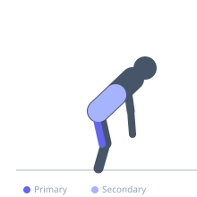
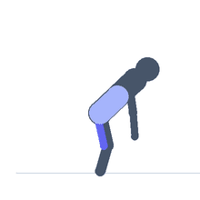

Exercise guide / Standing Hamstring Stretch
Standing Hamstring Stretch
The standing hamstring stretch targets all three hamstring muscles through hip flexion with the knees extended. Standing with feet flat on the floor and hinging forward at the hips places the hamstrings under lengthening tension. Keeping the spine relatively neutral during the stretch is preferred over spinal flexion to maximize the hamstring load and reduce lumbar stress.
Primary muscles
biceps femoris long head
semitendinosus
semimembranosus
Secondary muscles
erector spinae
Stabilizers
gluteus maximus
Equipment
No Equipment (Bodyweight)


Starting position
- Stand with feet hip-width apart and knees straight but not locked. Arms at sides.
Setup
- No equipment needed. Stand on a flat, non-slip surface.
Steps
- Step 1: Stand tall with feet hip-width apart and knees extended.
- Step 2: Hinge forward at the hips, keeping the spine long and chest forward rather than rounding the back.
- Step 3: Lower the torso toward the floor, reaching the hands toward the feet or floor.
- Step 4: When a moderate hamstring stretch is felt, stop and hold the position.
- Step 5: Hold 30–90 seconds, then slowly return to standing by extending the hips.
Coaching cues
- Hinge from the hips, not the lower back
- Think of trying to touch the floor with a flat back rather than a rounded spine
- Soften the knees very slightly if the stretch is too intense to control form
Breathing
- Breathe deeply and steadily. Each exhale allows the muscles to relax slightly, permitting a deeper position.
Range of motion
- Hinge as far as the hamstrings allow while maintaining a relatively neutral spine. The hands do not need to reach the floor for an effective stretch.
Tempo
- Hold 30–90 seconds. 2–4 rounds.
Common mistakes
- Rounding the spine excessively rather than hinging from the hips, which shifts tension to the lumbar spine
- Bouncing in the stretch (ballistic stretching), which can trigger the stretch reflex and reduce the stretch
- Locking the knees in a hyperextended position — keep them straight but not hyperextended
Safety
- Those with hamstring tears or acute lower back pain should avoid or modify this stretch
- Return to standing slowly to avoid a head rush
Training
- mobility: 2–4 reps
- mobility: 1–3 sets
- Rest: {'mobility': 15}